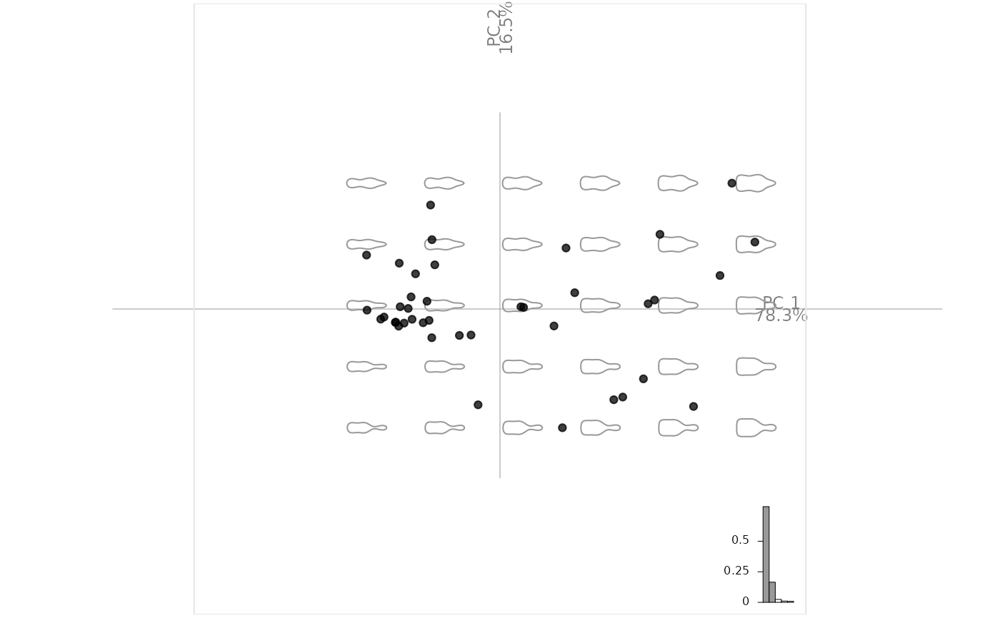

Usage
plot_PCA(
x,
f = NULL,
axes = c(1, 2),
palette = NULL,
points = TRUE,
points_transp = 1/4,
morphospace = TRUE,
morphospace_position = "range",
chull = TRUE,
chullfilled = FALSE,
labelpoints = FALSE,
labelgroups = FALSE,
legend = TRUE,
title = "",
center_origin = TRUE,
zoom = 0.9,
eigen = TRUE,
box = TRUE,
axesnames = TRUE,
axesvar = TRUE
)Arguments
- x
a PCA object
- f
factor specification to feed fac_dispatcher
- axes
numericof length two to select PCs to use (c(1, 2)by default)- palette
color paletteto usecol_summerby default- points
logicalwhether to draw this with layer_points- points_transp
numericto feed layer_points (default:0.25)- morphospace
logicalwhether to draw this using layer_morphospace_PCA- morphospace_position
to feed layer_morphospace_PCA (default: "range")
- chull
logicalwhether to draw this with layer_chull- chullfilled
logicalwhether to draw this with layer_chullfilled- labelpoints
logicalwhether to draw this with layer_labelpoints- labelgroups
logicalwhether to draw this with layer_labelgroups- legend
logicalwhether to draw this with layer_legend- title
characterif specified, fee layer_title (default to"")- center_origin
logicalwhether to center origin- zoom
numericzoom level for the frame (default: 0.9)- eigen
logicalwhether to draw this using layer_eigen- box
logicalwhether to draw this using layer_box- axesnames
logicalwhether to draw this using layer_axesnames- axesvar
logicalwhether to draw this using layer_axesvar
Note
This approach will replace plot.PCA (and plot.lda in further versions.
This is part of grindr approach that may be packaged at some point. All comments are welcome.
See also
Other grindr:
drawers,
layers,
layers_morphospace,
mosaic_engine(),
papers,
pile(),
plot_LDA(),
plot_NMDS()
Examples
### First prepare two PCA objects.
# Some outlines with bot
bp <- bot %>% mutate(fake=sample(letters[1:5], 40, replace=TRUE)) %>%
efourier(6) %>% PCA
#> 'norm=TRUE' is used and this may be troublesome. See ?efourier #Details
plot_PCA(bp)

plot_PCA(bp, ~type)
 plot_PCA(bp, ~fake)
#> factor passed was a character, and coerced to a factor.
plot_PCA(bp, ~fake)
#> factor passed was a character, and coerced to a factor.
 # Some curves with olea
op <- olea %>%
mutate(s=coo_area(.)) %>%
filter(var != "Cypre") %>%
chop(~view) %>% opoly(5, nb.pts=90) %>%
combine %>% PCA
op$fac$s %<>% as.character() %>% as.numeric()
op %>% plot_PCA(title="hi there!")
### Now we can play with layers
# and for instance build a custom plot
# it should start with plot_PCA()
my_plot <- function(x, ...){
x %>%
plot_PCA(...) %>%
layer_points %>%
layer_ellipsesaxes %>%
layer_rug
}
# and even continue after this function
op %>% my_plot(~var, axes=c(1, 3)) %>%
layer_title("hi there!")
# Some curves with olea
op <- olea %>%
mutate(s=coo_area(.)) %>%
filter(var != "Cypre") %>%
chop(~view) %>% opoly(5, nb.pts=90) %>%
combine %>% PCA
op$fac$s %<>% as.character() %>% as.numeric()
op %>% plot_PCA(title="hi there!")
### Now we can play with layers
# and for instance build a custom plot
# it should start with plot_PCA()
my_plot <- function(x, ...){
x %>%
plot_PCA(...) %>%
layer_points %>%
layer_ellipsesaxes %>%
layer_rug
}
# and even continue after this function
op %>% my_plot(~var, axes=c(1, 3)) %>%
layer_title("hi there!")
 # grindr allows (almost nice) tricks like highlighting:
# bp %>% .layerize_PCA(~fake) %>%
# layer_frame %>% layer_axes() %>%
# layer_morphospace_PCA() -> x
# highlight <- function(x, ..., col_F="#CCCCCC", col_T="#FC8D62FF"){
# args <- list(...)
# x$colors_groups <- c(col_F, col_T)
# x$colors_rows <- c(col_F, col_T)[(x$f %in% args)+1]
# x
# }
# x %>% highlight("a", "b") %>% layer_points()
# You get the idea.
# grindr allows (almost nice) tricks like highlighting:
# bp %>% .layerize_PCA(~fake) %>%
# layer_frame %>% layer_axes() %>%
# layer_morphospace_PCA() -> x
# highlight <- function(x, ..., col_F="#CCCCCC", col_T="#FC8D62FF"){
# args <- list(...)
# x$colors_groups <- c(col_F, col_T)
# x$colors_rows <- c(col_F, col_T)[(x$f %in% args)+1]
# x
# }
# x %>% highlight("a", "b") %>% layer_points()
# You get the idea.